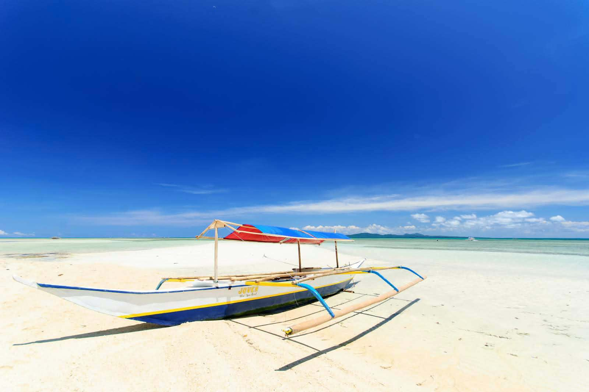
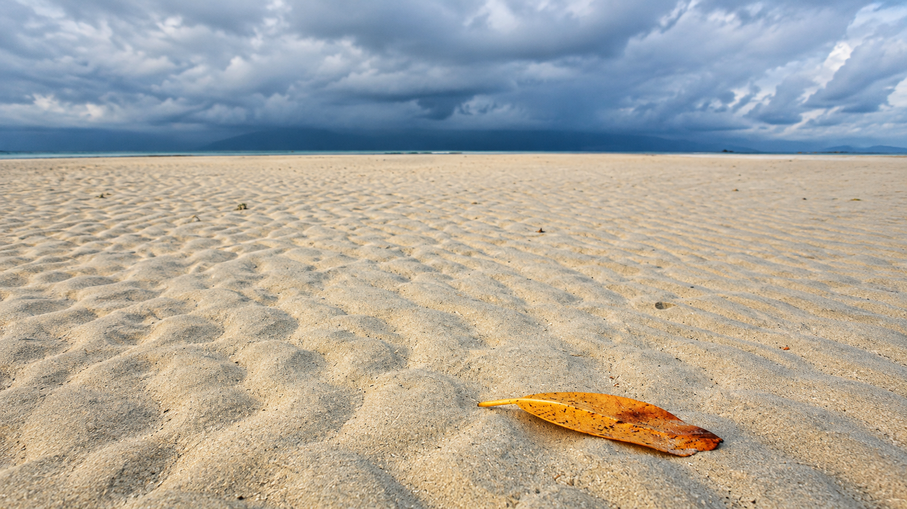
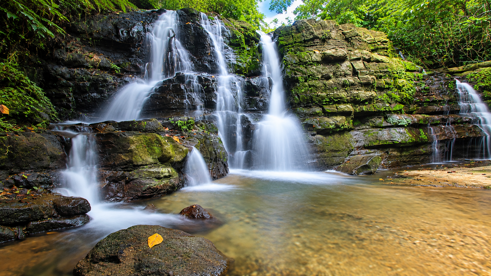
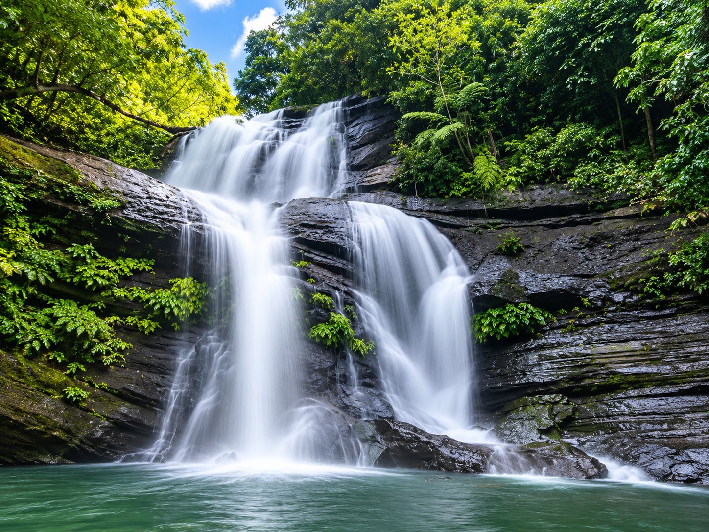
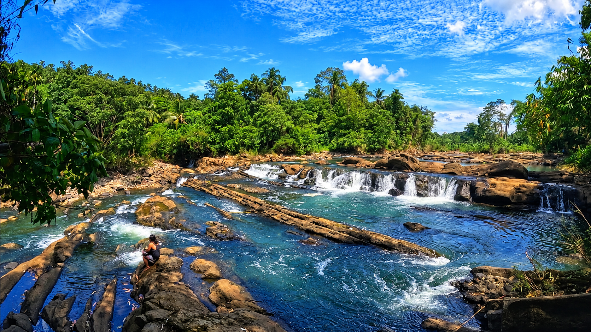
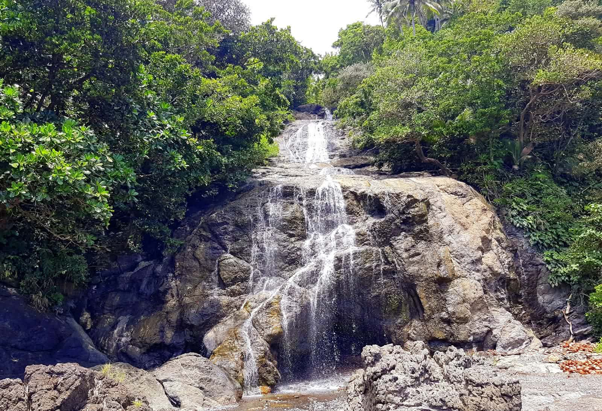
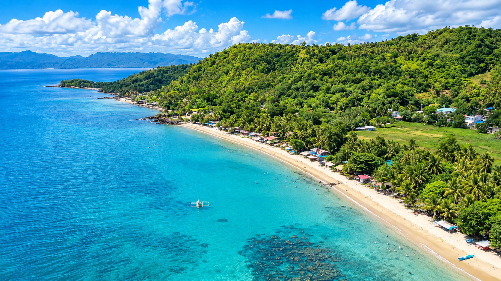

Discover the serene beauty and unique landscapes of Mauban's coastal gems.

Cagbalete Island is the crown jewel of Mauban's natural attractions. Famous for its creamy white sand and crystal-clear turquoise waters, the island's shoreline transforms dramatically with the tides. During low tide, vast expanses of exposed sand ripples create a unique and otherworldly landscape, perfect for long walks and photography. The island is accessible by a short boat ride from the mainland and offers a peaceful escape for those looking to disconnect from the hustle and bustle of city life.
Yang-In Sandbar is a dynamic coastal feature that changes its shape with the ebb and flow of the tide. During low tide, it becomes a wide, sandy expanse where visitors can walk and explore the marine life in the shallow pools left behind. As the tide rises, the sandbar transforms into a shallow swimming area, offering a unique and ever-changing coastal experience for beachgoers and nature enthusiasts.


Dahoyhoy Falls is one of the most accessible natural wonders in Mauban, thanks to a paved trail that leads directly to its refreshing waters. The waterfall cascades into a natural pool surrounded by lush greenery, making it an ideal spot for a cool dip after a short trek. It is a favorite among locals and visitors alike for its tranquil atmosphere and the opportunity to connect with nature without venturing too far into the wilderness.
Nestled deep within a forest setting, Alitap Falls has become more accessible over the years thanks to road development in the area. A shorter trail now leads visitors to its cool, inviting waters, making it a perfect destination for a half-day excursion. The falls are known for their serene environment, where the sound of rushing water and the chirping of birds create a symphony of natural calm.


Hagdan-Hagdan Falls is a series of short, broad cascades along the Balaybalay River. The name "Hagdan-Hagdan" is derived from the local word for stairs, which perfectly describes the stepped nature of the falls. Exploring this hidden gem requires a bit of adventure, and finding a reliable local guide is essential to safely navigate the trail and discover the best spots for swimming and picnicking.
Bisibis Falls offers a unique coastal waterfall experience, located near the sea and accessible by a short boat ride from Barangay Cagsiay III. The journey to the falls is an adventure in itself, taking visitors through scenic coastal views before arriving at the cascading waters. It is a perfect spot to combine a love for the ocean with the refreshing coolness of a forest waterfall.


Bulwagin Beach is a white sand beach located in Mauban, recognized as one of the town's tourist spots. While it may not be as famous as Cagbalete Island, it offers a unique coastal experience. The beach provides a scenic vantage point for viewing the Quezon Power Plant, especially at night when its lights create a spectacular display.
For visitors looking for a quieter alternative to the more crowded beaches, Bulwagin offers a peaceful retreat. The area is also home to a lighthouse, adding to its charm. It is a place where the natural beauty of the shoreline meets the modern presence of the nearby power facility, creating a landscape that is distinctly Mauban.